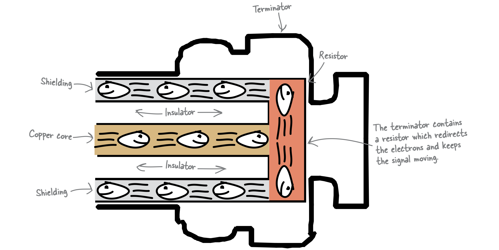

网络电缆
CAT-5电缆
CAT-5（Category 5 cable for Ethernet）电缆是以太网中常用的电缆，其内部是非屏蔽双绞线（UTP），两端接 RJ-45接头（水晶头）。
其内部一共有 8 根电线，按颜色分为 4 对，两两绞合在一起。
-
橙色电线负责发送数据，绿色电线负责接收数据。
蓝色电线和棕色电线是为了将来扩展带宽而预留的，目前没有什么用。
-
条纹用来区分极性：带白色条纹的电线为正极，纯色的电线为负极。
带宽（bandwidth）指单位时间内电线可传输的最大数据量，网络速率则是电线传输数据的实际速率。
应将带宽理解为一种“容量”，是单位时间内信息可传输的数据量的上界。
RJ-45插头
8根电线需要分别插入接头的8个插槽，与插槽末端的金属触点充分接触。当将接头插入某插孔时，接头里的金属探针会和插孔里的金属触点相互接触。注意：只有8根线的顺序正确时，信息才能顺利通过。电线的顺序有 2 种标准：
-
568A标准
-
568B标准
可见，两种标准只是对调了绿色电线和橙色电线的位置。使用任意一种均可以，关键是电缆两端的RJ-45接头必须使用同一种标准。
同轴电缆
同轴电缆网络（Coaxial Network）
同轴电缆网络（又称 RG-62网络）属于总线型网络。网络上的每个主机都必须通过T型连接器与网络相连。如果总线损坏、或末端没有安装终端电阻、或任意一个T型连接器出现故障，那么整个网络都将无法正常工作。
特点
同轴电缆和CAT-5电缆都可以用来连接网络，区别在于：
-
同轴电缆内部是一根铜导线，CAT-5内部是4对UTP。
同轴电缆也有护套，但内部只有一根导线。此外电缆内还包含塑料绝缘层和由铜质网状物构成的屏蔽层。
-
CAT-5使用的是RJ-45接头，而同轴电缆则需要和终端连接器、T型连接器、终端电阻等配合使用，不同的连接器有不同的用途。
桶形连接器（coupler）用来连接两端同轴电缆，终端连接器用来将电缆连接具体设备。
About terminator
As we’ve seen, a coaxial network cable is made up of one big conductor core. When the conduction is not looped back through the copper core, we say that it is not terminated. When a wire isn’t terminated, the network loses the flow of electrons and, therefore, the flow of network data.
A terminator ensures that the signal in the cable keeps moving. The terminator does this by ensuring that the electrons stay in an electrical loop. A resistor in the terminator redirects electrons to the shielding layer, which effectively keeps them looping back along the cable without interfering with the network’s signal. If the main cable is not terminated, the network will not function.

光纤
光纤由纤芯和包层（cladding）构成，包层的折射率低于纤芯，这使得入射角足够大时，光线可以发生全反射。
光纤损坏时，可以使用熔纤机进行修复。
熔纤机的工作过程
光纤也需要连接器，作用为：连接光缆，使光信号顺利通过。
光纤分为 2 类：单模光纤和多模光纤。